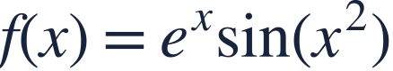
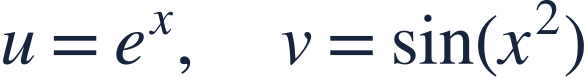
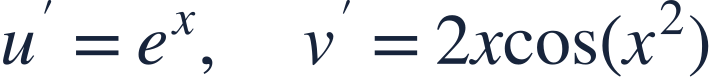
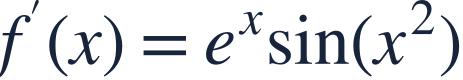
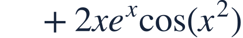
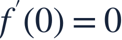
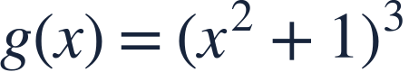

Choosing derivative rules
미분법 선택

Choose the outer structure first when several derivative rules are needed.
여러 미분법이 필요하면 가장 바깥 구조부터 판단합니다.

Choose the outer structure first when several derivative rules are needed.
여러 미분법이 필요하면 가장 바깥 구조부터 판단합니다.

The outer structure is a product; the sine factor contains a composition.
바깥은 곱이고 사인 인수 안에는 합성함수가 있습니다.
Use a rule tree: product first, then a chain rule within the second factor.
규칙의 순서를 정하세요. 먼저 곱의 법칙, 두 번째 인수 안에서는 연쇄법칙입니다.

Compute each factor derivative with its own structure.
각 인수의 구조에 맞게 도함수를 구합니다.


Keep both product contributions before simplifying.
정리하기 전에 곱의 법칙의 두 항을 모두 유지합니다.

Substitution gives a useful arithmetic check after the structural work.
구조에 맞게 미분한 뒤 대입하여 계산을 확인합니다.
A chain rule inside one factor does not replace the outer product rule.
인수 안의 연쇄법칙으로 바깥 곱의 법칙을 대신할 수 없습니다.

Choose the rule and find g′(1).
미분법을 고르고 g′(1)을 구하세요.